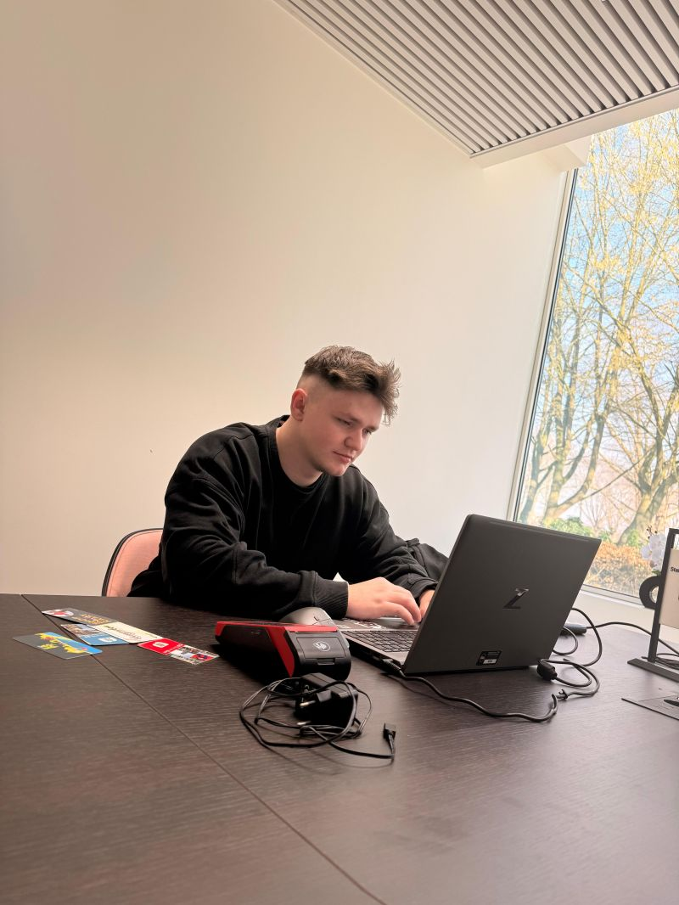
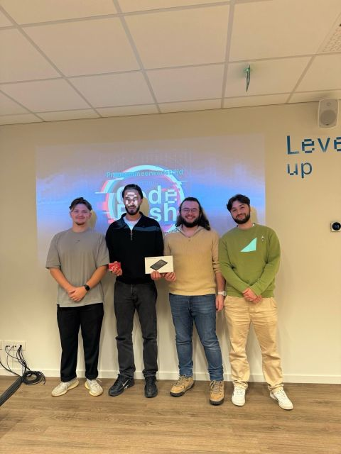
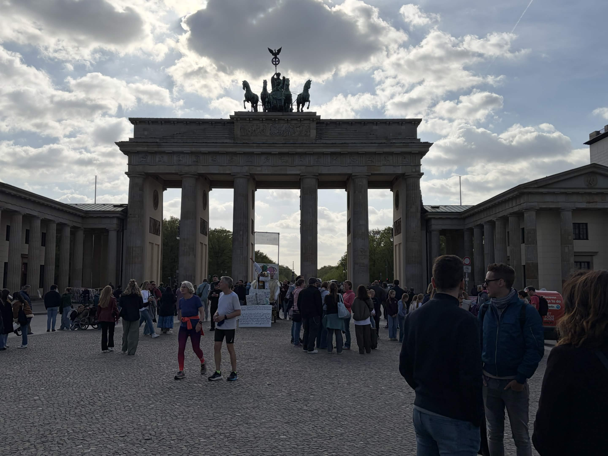
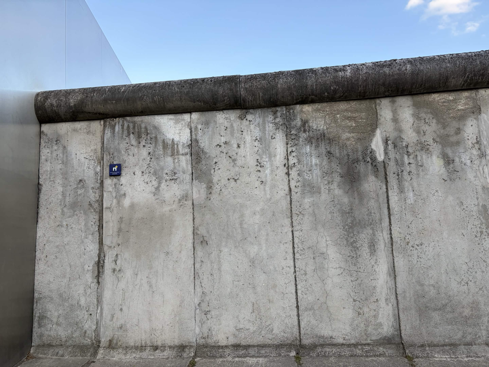
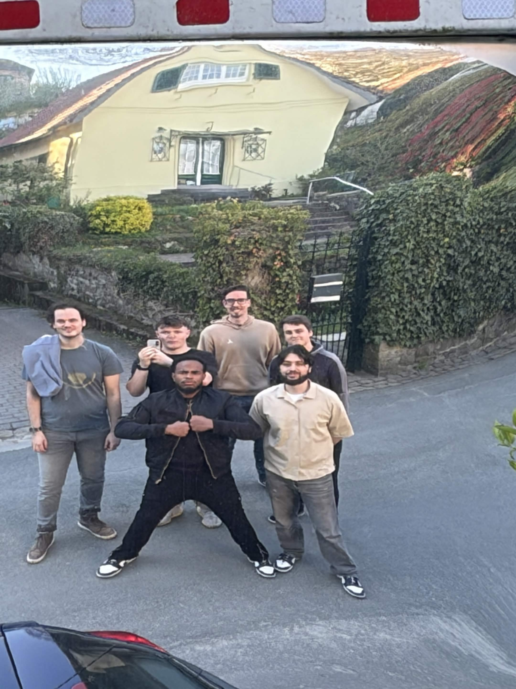
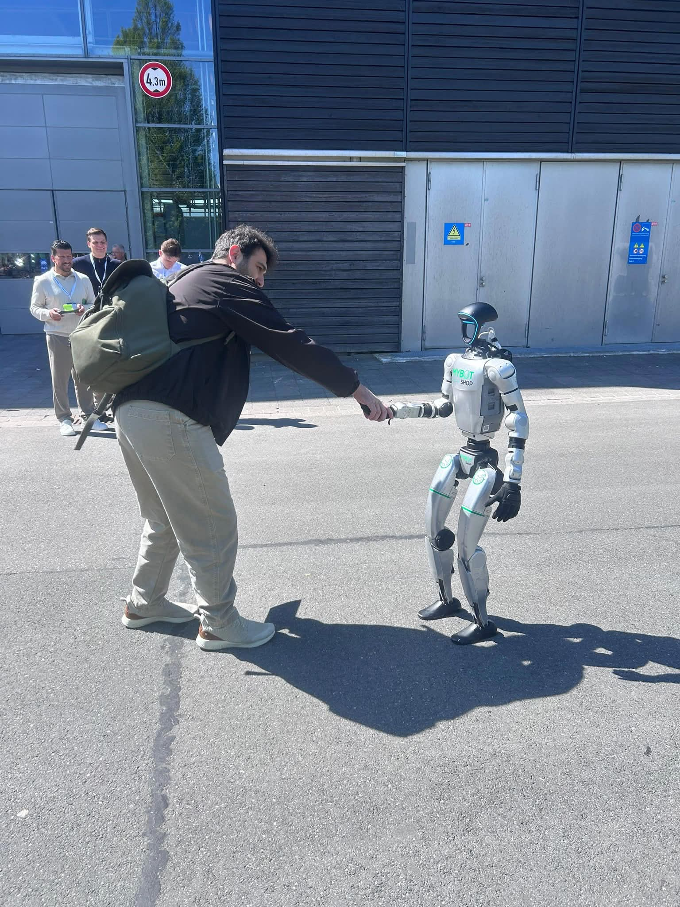
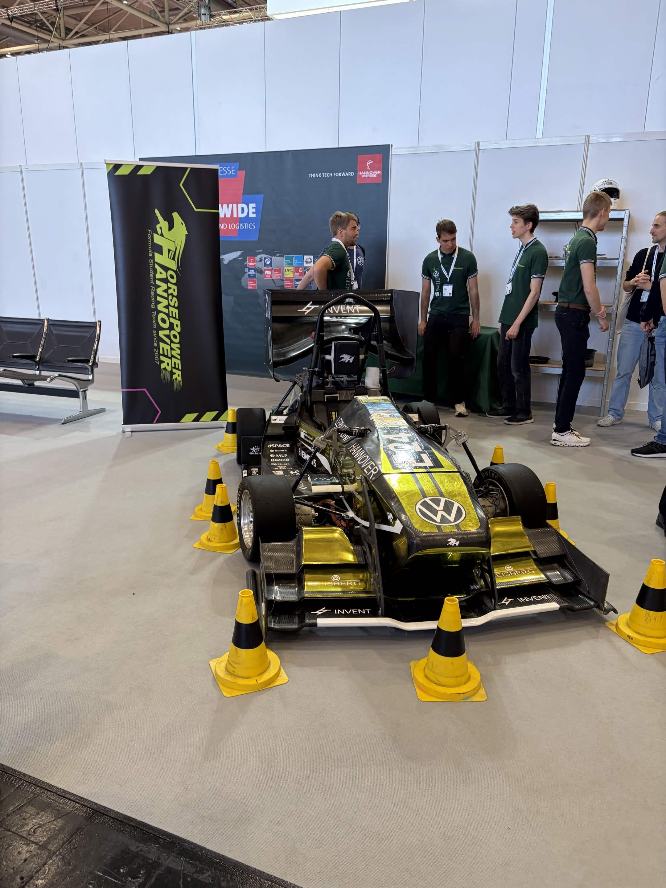
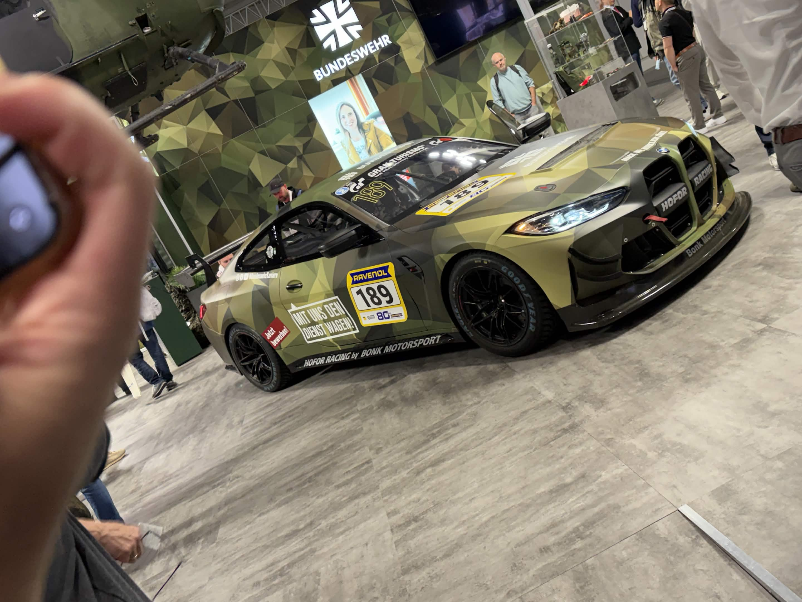
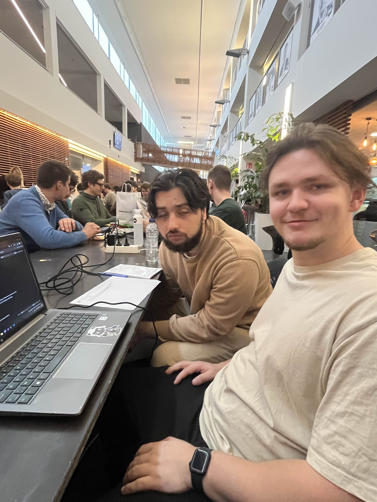

BIQ: Het nut van pull requests en code review in een product development lifecycle.
Pull requests, code reviews, requirements, clean code, iteratieve commits, SonarQube.
Mijn naam is Jelle Oeyen. Mijn interesses liggen vooral bij alles wat met computers en technologie te maken heeft, maar daarnaast ben ik ook veel bezig met fitness. Op mijn vijfde verjaardag kreeg ik een Nintendo. Vanaf dat moment is mijn interesse in games en technologie echt begonnen. Later maakte de Nintendo plaats voor een laptop, waarop ik veel tijd doorbracht. Een computer fascineerde mij enorm, omdat je er zoveel verschillende dingen mee kan doen.
Tijdens de middelbare school liep niet alles altijd even gemakkelijk, maar mijn computer was voor mij steeds een veilige plek waar ik tot rust kon komen. Uiteindelijk spendeerde ik er zoveel tijd aan dat het niet meer echt gezond was. Daarom besloot ik om naar de fitness te gaan. Ondertussen train ik al meer dan drie jaar, vijf dagen per week, om een gezonder persoon te worden. Dit toont aan dat ik kan doorzetten en discipline heb. Daarnaast speel ik graag competitieve teamgames. Hierdoor heb ik geleerd om beter te communiceren en samen te werken met anderen.
Mijn studietraject is niet altijd even vlot verlopen. Eerst studeerde ik Elektronica-ICT aan PXL, maar dat bleek niet helemaal mijn ding te zijn. Daarna ben ik Informatica gaan studeren aan UHasselt. Dat was inhoudelijk meer wat ik wilde doen, maar het niveau lag voor mij iets te hoog. Uiteindelijk kwam ik terecht bij Toegepaste Informatica aan PXL, en vanaf het eerste moment voelde ik dat dit de juiste richting voor mij was.
Er waren momenten waarop het moeilijker was, onder andere omdat mijn ouders niet altijd even goed te been zijn en ik thuis soms moet inspringen. Daardoor heb ik wel geleerd om verantwoordelijkheid op te nemen en rekening te houden met anderen.
Over enkele jaren wil ik werken in een omgeving waar ik een zelfstandigere rol kan opnemen en meer verantwoordelijkheid krijg binnen projecten. Ik wil kunnen tonen dat ik goed ben in wat ik doe, dat ik betrouwbaar ben en dat ik zelfstandig kwalitatieve oplossingen kan uitwerken. Tegelijk wil ik blijven bijleren en mezelf verder ontwikkelen als IT-professional.
Volgens mijn Thalento-rapport ben ik een meewerkend persoon, en dat komt goed overeen met hoe ik mezelf zie. Ik vind het belangrijk om actief mee te denken en samen met anderen tot een goede oplossing te komen. Door goed samen te werken, kunnen problemen vaak sneller en efficiënter worden opgelost.
Op dit moment beschik ik vooral over de kennis en vaardigheden die ik tijdens mijn opleiding heb opgebouwd. Daarnaast blijf ik actief bijleren, bijvoorbeeld tijdens mijn stage. Ik vind het belangrijk om mezelf voortdurend te blijven ontwikkelen, omdat IT geen stilstaande sector is. Technologie verandert en vernieuwt constant, en daarom moeten wij als IT’ers ook blijven groeien.

Verder naar overzicht & verslag
2 · Overzicht activiteiten
Pull requests, code reviews, requirements, clean code, iteratieve commits, SonarQube.
Intro performance testing, key metrics, hands-on met o.a. k6 en XHR recording.
Onderzoek naar 6G, evolutie 2G–5G en basisconcepten.
Deep dive .NET Aspire: developmentproces versnellen en vereenvoudigen.
BDD/ATDD, acceptatiecriteria, gedeelde taal, kwaliteit en afstemming.
QA/testing-basis, AI in Postman, Newman, Postbot, rapid prototyping.
Enterprise UX: patterns, design sprints, prototyping, usability, accessibility.
Belang van open source, risico’s, hoe organisaties dit beheren.
Van analyse tot implementatie: Event Storming, domain modelling, communicatie tussen domeinen.
Algoritme voor efficiënte personeelsplanning (minimale kosten).
Algoritmische vraagstukken zonder AI. PXL-NeXT.
POP-sessies en infosessies rond het researchproject.
Workshop: groepen leren kennen.
Presentatie over afleiding en focus.
Team-workshop met puzzels als voorbereiding op het IT-project.
Vijf dagen, bezoeken aan IT-gerelateerde locaties.
3 · Selectie van activiteiten
Domein: innovatie / algoritmiek · Mechelen · 25/10/2025

In team (4 personen) hadden we vier uur om een algoritme te schrijven dat personeelsplanning optimaliseert met minimale totale kosten. We startten met één algemene oplossing voor alle testcases, verdeelden daarna de taken en fine-tuneden per testcase. We wonnen; de prijs was o.a. een Raspberry Pi met touchscreen. Voor mij was het de eerste hackathon: ik leerde vooral over taakverdeling onder druk, iteratief verbeteren en opnieuw samenkomen wanneer optimalisaties vastliepen.
Uitgebreide reflectie: zie Word, sectie 3.1.
Domein: internationalisering · 22/04/2026 – 26/04/2026






Vijf dagen met o.a. Hochschule Bielefeld, Hannover Messe (industrie en innovatie), Chaos Computer Club in Berlijn, en vrije tijd in meerdere steden. De reis gaf me een breder beeld van IT dan enkel schoolvakken: van onderwijs en beurzen tot security, AI en maatschappelijke impact. Persoonlijk was het mijn eerste IT-gerelateerde reis in het buitenland; een leerpunt is langer geconcentreerd luisteren bij lange sessies.
Uitgebreide reflectie: zie Word, sectie 3.2.
Domein: innovatie / programmeerwedstrijd · PXL · 11/02/2026

In een team van drie losten we binnen drie uur algoritmische vraagstukken op, zonder AI, met maar één laptop. Ik had vooral de rol van programmeur (ideeën van het team omzetten in code). We pasten onze werkwijze aan: twee personen op de actieve opgave, één alvast op de volgende. We wonnen geen prijs, maar ik leerde eerst een duidelijk plan maken vóór je blijft coderen, en niet te snel te wisselen van opgave.
Uitgebreide reflectie: zie Word, sectie 3.3.
4 · Eindreflectie
Terugblik op de opleiding, mijn groei en de link met de X-Factor van PXL.
Toen ik begon aan de opleiding Toegepaste Informatica, wist ik vooral dat ik iets met computers wilde doen en dat ik graag wilde leren programmeren. Ik had toen nog geen duidelijk beeld van wat de IT-sector allemaal te bieden heeft. Doorheen de opleiding, de projecten, seminaries, hackathons en studiereis ben ik stap voor stap beginnen ontdekken hoe breed de IT-wereld eigenlijk is. IT gaat niet alleen over code schrijven, maar ook over samenwerken, analyseren, testen, security, UX, communicatie, probleemoplossend denken en blijven bijleren.
Een belangrijk doel van mij was om mijn programmeervaardigheden te verbeteren. Door de lessen, opdrachten en het vele opzoekwerk buiten de schooluren merk ik dat ik hierin zeker gegroeid ben. Ik voel mij vandaag sterker dan toen ik begon. Tegelijk besef ik ook dat programmeren iets is waarin je nooit volledig uitgeleerd bent. Technologie verandert voortdurend, waardoor het belangrijk blijft om nieuwsgierig te zijn en jezelf te blijven ontwikkelen.
Door dit traject heb ik ook veel over mezelf geleerd. Ik heb ontdekt dat ik kan doorzetten, ook wanneer iets moeilijk loopt. Niet alles ging altijd vanzelf, maar ik ben blijven proberen en zoeken naar oplossingen. Daarnaast heb ik geleerd hoe belangrijk samenwerken is. In groepswerken, hackathons en andere activiteiten merkte ik dat goede communicatie en een positieve groepssfeer vaak het verschil maken.
De X-Factor van PXL heeft hierin een grote rol gespeeld. Het heeft mij in contact gebracht met activiteiten en ervaringen die ik uit mezelf misschien minder snel zou doen. Daardoor kreeg ik de kans om mezelf beter te leren kennen, zowel als student als toekomstige IT-professional. De X-Factor toont voor mij aan dat een goede IT’er niet alleen technisch sterk moet zijn, maar ook moet kunnen samenwerken, initiatief nemen, kritisch nadenken en zich blijven ontwikkelen.
In de toekomst wil ik nog veel ervaring opdoen en mijn kennis verder uitbreiden. Mijn ambitie is om te werken in een omgeving waar ik steeds zelfstandiger kan worden en meer verantwoordelijkheid kan opnemen. Ik wil kunnen tonen dat mensen op mij kunnen vertrouwen en dat het werk dat ik aflever van goede kwaliteit is. Tegelijk wil ik blijven bijleren en groeien als IT-professional.
Mijn (em)passie komt vooral naar voren in mijn interesse voor IT en mijn aandacht voor anderen. Mijn passie voor technologie is al ontstaan vanaf het moment dat ik met computers in aanraking kwam. IT voelt voor mij niet aan als iets dat ik enkel voor school doe, maar als een vakgebied waarin ik mezelf echt wil blijven verbeteren. Daarnaast probeer ik binnen teams mee te zorgen voor een positieve sfeer: goed luisteren en meedenken als iemand het moeilijk heeft.
Wanneer er een probleem is, begin ik meestal snel mee te denken en zoek ik actief naar oplossingen. Nieuwe tools en werkwijzen zie ik als kansen om te leren. In IT verandert alles snel; open staan voor vernieuwing hoort er voor mij bij.
Ik heb mijn kennis binnen Toegepaste Informatica stap voor stap uitgebreid. Tegelijk heb ik door projecten en seminaries geleerd dat IT niet op zichzelf staat: UX, security, testing, business en communicatie horen allemaal bij goede, bruikbare oplossingen.
Samenwerken is een belangrijk onderdeel van mijn ontwikkeling. Ik probeer open te zijn en draag bij aan een goede groepsdynamiek. Ook de studiereis naar Duitsland heeft mijn blik verruimd: technologie zie je internationaal op talloze manieren. Als ik terugkijk, ben ik trots op mijn groei — technisch en persoonlijk — en die wil ik meenemen als IT-professional.